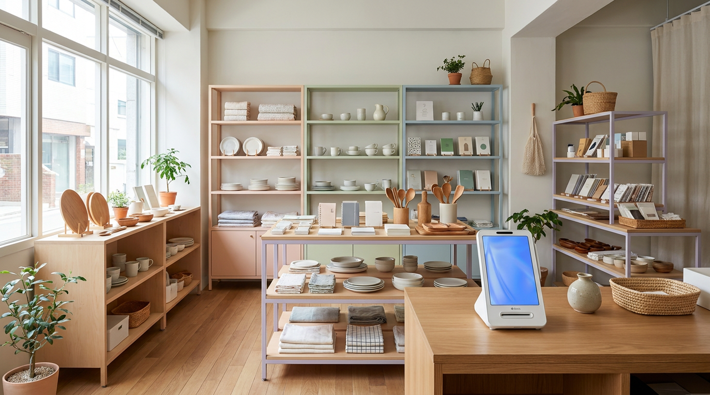
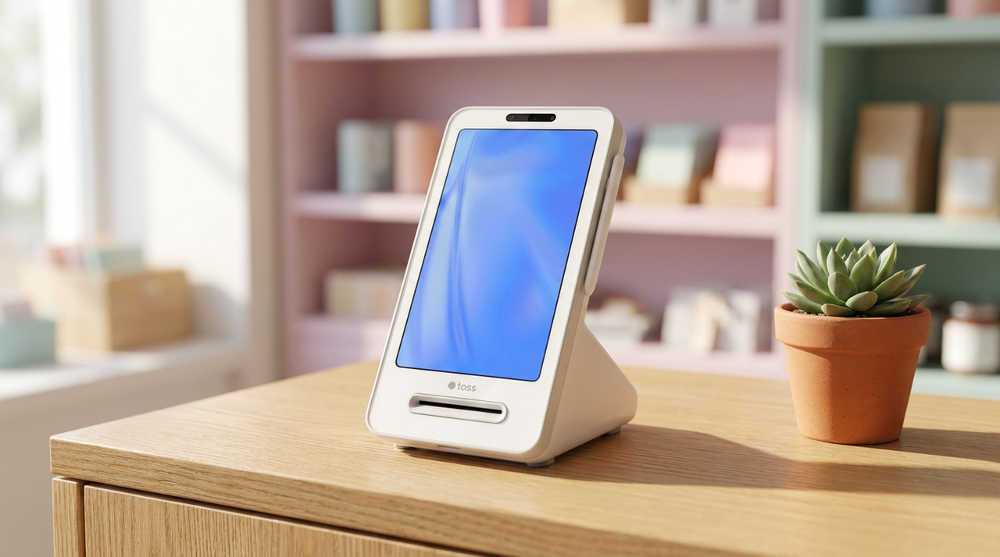

매장 밖에서도 카드 결제를 받아야 할 때 확인할 3가지
소품샵이나 잡화점을 하시는 분들은 일 년에 몇 번씩 매장 밖으로 나갑니다. 플리마켓, 지역 행사, 팝업 부스. 물건은 챙겼는데 결제를 어떻게 받을지는 마지막까지 정하지 못해, 결국 계좌이체로만 받다가 몇 건을 놓치는 경우를 자주 봅니다. 저희가 14년간 매장을 다니며 확인한 바로는, 매장 밖 결제에서 문제가 되는 것은 기기 성능이 아니라 통신·전원·정산 세 가지였습니다. 이 글에서는 그 세 가지를 어떻게 준비하면 되는지 정리했습니다.

첫째, 그 자리에 통신이 되는지부터 확인하세요
카드 결제는 승인 요청이 오가야 완료됩니다. 그래서 통신이 불안한 자리에서는 결제가 느려지거나 실패합니다. 실내 행사장 지하, 사람이 몰리는 야외 부스, 건물 안쪽 자리가 특히 그렇습니다.
행사 전날이나 당일 아침에 그 자리에서 휴대폰으로 신호를 확인해 보시는 것만으로도 대비가 됩니다. 신호가 약하면 부스 위치를 조금 옮기거나, 결제 방식을 미리 다르게 준비해 두면 됩니다. 현장에서 처음 확인하면 이미 손님이 앞에 서 있습니다.
사람이 몰리는 시간에는 신호가 더 나빠집니다. 아침에는 잘 되던 자리가 오후에 느려지는 일이 흔합니다. 그래서 확인은 가능하면 붐비는 시간대 기준으로 생각해 두시는 편이 안전합니다.
둘째, 전원은 생각보다 빨리 떨어집니다
행사는 대개 하루 종일입니다. 무선으로 쓰는 기기는 결제 건수가 많아질수록, 통신이 약할수록 전력을 더 씁니다. 오후 서너 시에 갑자기 꺼지는 상황이 실제로 자주 생깁니다.

대비는 단순합니다. 보조 전원을 하나 챙기고, 중간에 충전할 수 있는 시간을 미리 정해 두는 것입니다. 점심시간처럼 손님이 잠깐 뜸한 때에 꽂아 두면 됩니다. 행사 중간에 기기가 꺼지면 그 시간의 매출이 사라지는 것은 물론, 줄 서 있던 손님도 흩어집니다.
콘센트를 쓸 수 있는 자리인지도 미리 확인하시면 좋습니다. 행사장에 따라 전원 사용이 제한되기도 하고, 멀티탭을 직접 가져가야 하는 경우도 있습니다.
셋째, 매장 매출과 어떻게 합쳐지는지 정해 두세요
의외로 이 부분에서 뒷수습이 길어집니다. 행사에서 받은 결제가 매장 매출과 따로 쌓이면, 행사가 끝난 뒤 손으로 합쳐야 합니다. 며칠 지나면 어느 건이 행사 건인지도 헷갈립니다.
미리 한 대에서 받도록 정리해 두면 매출이 한곳에 모입니다. 어디서 받은 결제인지 구분해 볼 수 있으니 행사 성과를 따로 확인하기도 쉽습니다. 다음 행사에 나갈지 말지를 판단할 때 이 기록이 근거가 됩니다.
| 준비 항목 | 확인할 내용 |
|---|---|
| 통신 상태 | 부스 자리에서 붐비는 시간 기준으로 확인 |
| 전원 | 보조 전원 준비, 중간 충전 시간 확보 |
| 매출 합산 | 매장 매출과 한곳에 모이는지 |
| 영수증 | 용지 여유분, 필요 없으면 발행 방식 미리 정리 |
| 취소·환불 | 현장에서 처리 가능한지 미리 한 번 해보기 |
| 보관·이동 | 기기 파손 대비, 이동 중 충격 |
매장 밖 결제는 '한 번 더 파는 기회'입니다
행사에 나가는 이유는 결국 새로운 손님을 만나기 위해서입니다. 그 손님이 물건을 마음에 들어 했는데 결제 방법이 없어 돌아선다면, 그날 나간 의미가 절반으로 줄어듭니다. 특히 소품처럼 즉흥적으로 사게 되는 물건은 그 자리에서 결제되지 않으면 대개 다시 오지 않습니다.
반대로 결제가 매끄러우면 손님은 한 번 더 둘러봅니다. 계산이 빨리 끝나면 뒤에 서 있던 사람도 부담 없이 다가옵니다. 작은 부스일수록 이 흐름이 매출을 크게 좌우합니다.
행사에서 만난 손님이 매장을 다시 찾는 경우도 많습니다. 그때 매장에서도 같은 방식으로 결제가 되면 손님 입장에서는 익숙한 가게가 됩니다. 이 연결까지 생각하시면 매장 밖 결제 준비는 하루짜리 준비가 아닙니다.
행사 다음 날, 정리에서 시간이 갈립니다
행사에 다녀오면 몸이 지칩니다. 그 상태에서 매출 정리까지 남아 있으면 대개 미루게 되고, 미룬 것은 며칠 뒤에 훨씬 어려워집니다. 현장에서 무엇을 얼마에 팔았는지가 기억에서 흐려지기 때문입니다.
이 부분은 준비 단계에서 대부분 해결됩니다. 행사 결제와 매장 결제가 같은 자리에 쌓이면 다음 날 따로 정리할 것이 없습니다. 어디서 받은 건지 구분해 볼 수 있으니 이번 행사가 남는 장사였는지도 그 자리에서 판단할 수 있습니다.
행사는 참가비와 이동, 인건비가 들어갑니다. 그래서 매출만 보면 잘된 것 같아도 실제로는 남지 않는 경우가 있습니다. 기록이 남아 있으면 다음 제안이 왔을 때 나갈지 말지를 감이 아니라 숫자로 정할 수 있습니다.
몇 번 나가다 보면 어떤 행사가 우리 물건과 맞는지도 보입니다. 같은 플리마켓이라도 손님층이 다르고, 잘 팔리는 품목이 다릅니다. 이 판단은 한 번의 경험이 아니라 쌓인 기록에서 나옵니다. 저희가 매출이 한곳에 모이도록 구성을 권해 드리는 이유입니다.
자주 묻는 질문
Q. 매장에서 쓰는 기기를 그대로 들고 나가도 되나요?
매장 구성과 기기 종류에 따라 다릅니다. 지금 쓰고 계신 기기를 알려 주시면 그대로 이동해 쓸 수 있는지, 별도 구성이 나은지 안내해 드립니다.
Q. 행사 며칠만 쓰려는데 방법이 있을까요?
사용 빈도와 기간에 따라 맞는 구성이 다릅니다. 연간 몇 번 정도 나가시는지 알려 주시면 그에 맞게 제안 드립니다.
Q. 통신이 아예 안 되는 자리면 어떻게 하나요?
자리를 옮기는 것이 가장 확실합니다. 그것이 어려운 상황이라면 미리 말씀해 주시면 가능한 대비 방법을 함께 찾아 드립니다.
Q. 비용은 어떻게 되나요?
구성과 사용 방식에 따라 달라져 상담 시 직접 공급가로 안내해 드립니다. 토스단말기는 약정 없이 이용하실 수 있어 시즌성 사용에도 부담이 적습니다.
준비는 세 가지면 충분합니다
통신, 전원, 그리고 매출이 어디에 쌓이는지. 매장 밖 결제는 이 세 가지만 정리해 두면 대부분 문제없이 지나갑니다. 어떤 행사에 얼마나 자주 나가시는지, 지금 매장에서 어떤 기기를 쓰고 계신지 알려 주시면 그에 맞는 준비를 함께 정리해 드리겠습니다. 정품 신제품 보증, 수도권은 직접 방문해 설치하고 관리해 드립니다.
- 📞 전화상담 1544-7754
- 🌐 홈페이지 https://nwpos.co.kr

📷 인스타그램 팔로우 https://www.instagram.com/nurinetworkspos

▶️ 유튜브 구독 https://www.youtube.com/@nurinetworks